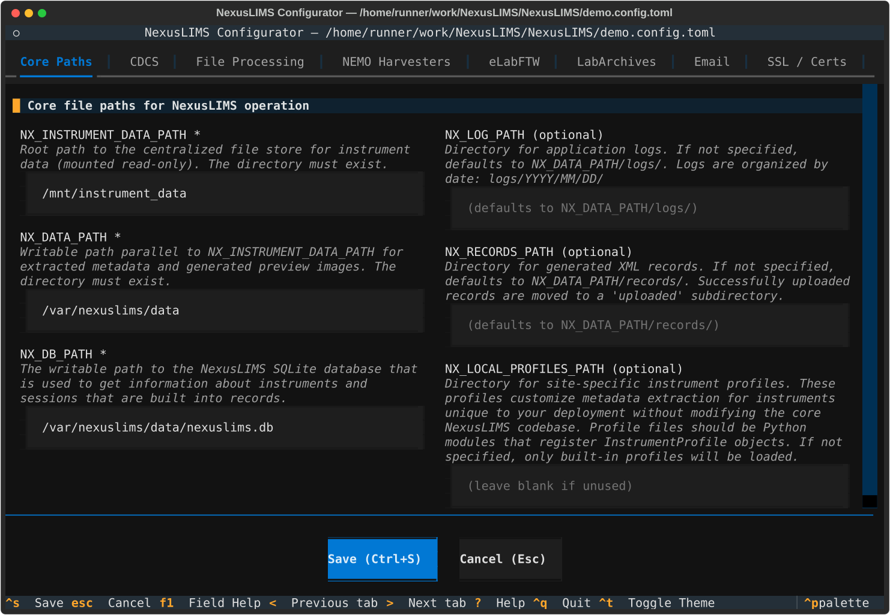
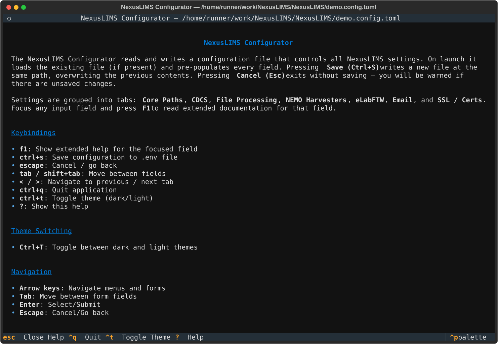
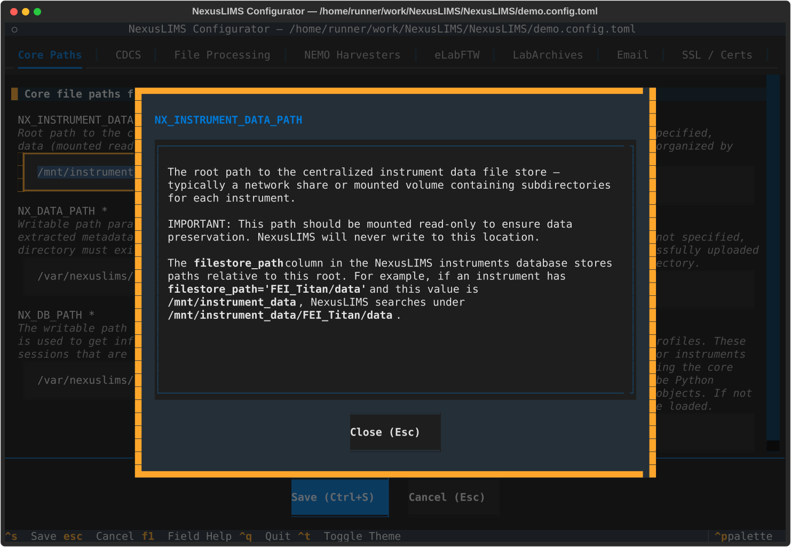

Configuration#
This guide provides comprehensive information about configuring NexusLIMS. Configuration is possible through a few methods. The easiest is to use a configuration file, though you can also use process-level environment variables.
Added in version 2.9.0: Prior to 2.9.0, NexusLIMS relied on a .env file for configuration that was required to be present in the working directory
of the process running the nexuslims command. In versions 2.9.0 and later, a persistent configuration file is used instead,
so the settings used are consistent regardless of where the command is invoked.
Configuration Files#
NexusLIMS looks for its configuration file first at ~/.config/nexuslims/config.toml (user-level), followed by /etc/nexuslims/config.toml (system-level), where ~ represents the home directory of the user account used to run NexusLIMS. You can set the NX_CONFIG_FILE environment variable to select another TOML file or an older style .env file (if you have a configuration from a version before 2.9.0). Environment variables set for the process will override values provided in the config file. If the selected file does not exist, NexusLIMS will use environment variables and built-in defaults where possible, though the required variables still need to be supplied.
NexusLIMS selects one configuration file in this order:
The absolute path in
NX_CONFIG_FILE, if set, even if that file does not exist.~/.config/nexuslims/config.toml, if it exists./etc/nexuslims/config.toml, if it exists.
If neither default file exists and NX_CONFIG_FILE is unset, NexusLIMS uses the user path ~/.config/nexuslims/config.toml as the location for a new configuration file. You can use nexuslims config edit to create a new configuration file or edit an existing one.
See the complete TOML reference example for a copyable configuration showing all supported settings.
The data directories and database file must exist before settings are validated. You should use absolute paths for all path settings so they resolve consistently. For a service or scheduled job (which often run from cron as a different user), you should explicitly set NX_CONFIG_FILE to the absolute path of the config file and ensure the service account can read it.
Migrating older configuration files#
To migrate an existing working-directory .env (from versions of NexusLIMS prior to 2.9.0), export it using the NX_CONFIG_FILE
environment variable, then import the resulting JSON into the default TOML location. Assuming you have already upgraded to 2.9.0
(or later), you can run the following from the directory containing your .env to do this:
backup=$(mktemp "${TMPDIR:-/tmp}/nexuslims-config.XXXXXX")
NX_CONFIG_FILE="$PWD/.env" nexuslims config dump --output "$backup" &&
env -u NX_CONFIG_FILE nexuslims config load "$backup" \
--config-path "$HOME/.config/nexuslims/config.toml"
This example writes to the user configuration path. If you would like to use a system config instead, copy the resulting file to /etc/nexuslims/config.toml. Please double check the resulting TOML matches what you expect and backup the original .env until you have verified the migration.
Alternatively, you can keep using the old .env file by setting NX_CONFIG_FILE to its absolute path for every process, but it is recommended to upgrade to the new config format going forward. As of version 2.9.0, NexusLIMS will no longer automatically read the working directory for .env.
Configuration Management#
NexusLIMS provides both CLI tools and an interactive terminal UI to help you manage, debug, and migrate your configurations between environments.
Inspecting configuration selection#
Most NexusLIMS CLI commands will print what configuration file is active. For more context, you can use the
nexuslims config status command to print a complete report, including the path to the active configuration file, what user and system candidates configuration files are present on your system, what user the nexuslims process is running as, and the names of any environment variables that are currently overriding configuration file settings. As an example:
nexuslims config status
Active configuration:
Selected file: /etc/nexuslims/config.toml (system)
File status: exists
Candidate files:
User: /home/alex/.config/nexuslims/config.toml (missing)
System: /etc/nexuslims/config.toml (exists, selected)
Running as user: alex
Overrides: none
If you set NX_CONFIG_FILE, NexusLIMS uses that path even if the file is
missing. It will not fall back to the user or system file.
Depending on your configuration, NexusLIMS may run as a service under a different user account and
have different settings from your terminal. To check what the service sees, run the config status command as the
service user with the same environment variables. The Overrides section lists the
names of settings provided through environment variables, without their values.
Interactive Configuration Editor (TUI)#
The NexusLIMS Configuration Editor provides a user-friendly terminal interface for editing your configuration file:
# Launch the interactive configurator
nexuslims config edit
# Edit a specific configuration file
nexuslims config edit --config-path /path/to/config.toml
The editor shows the selected configuration file and waits for Enter before opening.
--config-path (or its alias --env-path) opens a specific file and warns if it is not active.
The editor requires an interactive terminal.
The configurator features:
Tabbed Interface: Organized into logical sections (Core Paths, CDCS, File Processing, etc.)
Pre-populated Fields: Loads existing configuration values automatically
Real-time Validation: Catches errors before saving
Context-sensitive Help: Press F1 on any field for detailed documentation
Dynamic NEMO Management: Add/remove multiple NEMO harvester instances
Toggle Sections: Enable/disable optional features like eLabFTW and Email alerts

Main Screen of the configuration TUI#
Navigation:
Tab/Shift+Tab: Move between fields</>: Navigate between tabsF1: Show field-specific helpCtrl+S: Save configurationEscape: Cancel/Exit?: Show the overall help screen

Configuration app general help screen (shown with ? key)#
Field Help: Press F1 while focused on any field to see extended documentation:

Showing the detailed help for a particular field (by pressing F1)#
Video Demonstrations#
This demo shows opening the configuration tool, browsing around the “tabs” that separate the logical grouping of config values, showing the help screen, and then exiting:
This video demonstrates using the F1 key to show detailed help for various configuration variables.
This capability can help you learn more about what each setting does and how to properly set the values:
F1 key to view detailed help for different fields
This video demonstrates adding a NEMO harvester configuration to the application. Since NexusLIMS supports multiple NEMO instances in one installation, the configuration tool allows you to add/delete harvesters and fill out each harvester’s configuration in a logical grouping:
Dumping Configuration#
Added in version 2.9.0: With the changes to configuration management in 2.9.0, the dump/load functionality is
less relevant, and it is recommended to instead just copy your config.toml file if you
want to migrate configurations. These legacy commands are documented here, and may be
removed in a future version.
The nexuslims config dump command can be used to export the current settings as
JSON, which can be useful for importing/exporting configs from one machine to another.
You can use the --output argument to send the output to a file rather than printing
to the console.
Warning
The output contains credentials, so you should keep it private. An existing output file will overwritten without prompting.
Loading Configuration#
Added in version 2.9.0: With the changes to configuration management in 2.9.0, the dump/load functionality is
less relevant, and it is recommended to instead just copy your config.toml file if you
want to migrate configurations. These legacy commands are documented here, and may be
removed in a future version.
Use nexuslims config load /path/to/config.json to write a dumped configuration
to the selected file. If the file already exists, NexusLIMS asks for confirmation
and creates a backup before replacing it. Use --config-path to choose another
file, or --force to skip confirmation.
Configuration in Logs#
When nexuslims build-records starts with a verbosity of -v or higher,
it logs a sanitized view of the loaded configuration to help with debugging.
Known secrets such as tokens, passwords, and certificate contents are redacted.
Other settings, including identifiers and paths, can still be present; handle logs
accordingly.
Example log output:
INFO - Effective configuration:
INFO - {
INFO - "NX_DATA_PATH": "/var/nexuslims/data",
INFO - "NX_CDCS_TOKEN": "***",
INFO - "nemo_harvesters": {
INFO - "1": {"address": "https://nemo.example.com/api/", "token": "***"}
INFO - }
INFO - }
This is particularly useful when:
Troubleshooting why a specific setting isn’t taking effect
Verifying that configuration changes were picked up
Confirming which NEMO instances are configured
Checking computed defaults for optional settings
Configuration Reference#
Example configuration: a complete TOML file to copy and adapt.
Configuration settings: descriptions, defaults, and requirements for individual settings.
See Also#
Getting Started - Initial setup guide
Instrument Profiles - Customizing metadata extraction
Record building workflow - Understanding the record building process
Configuration in Code - Accessing and testing configuration in code